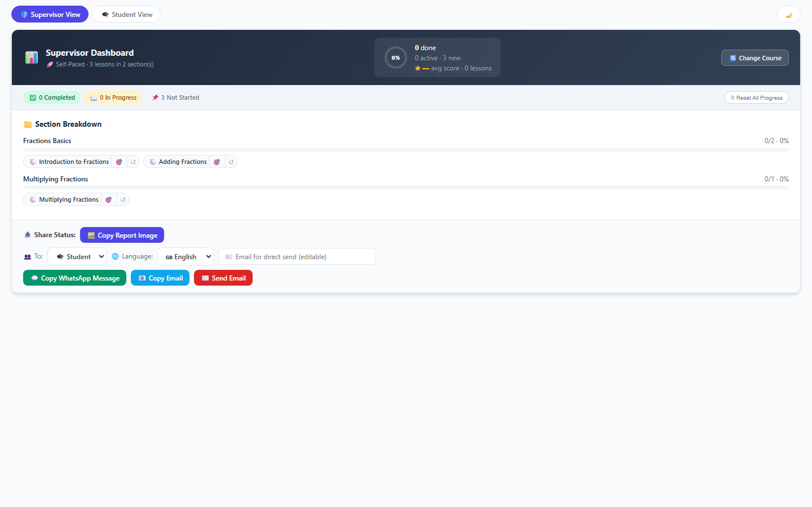
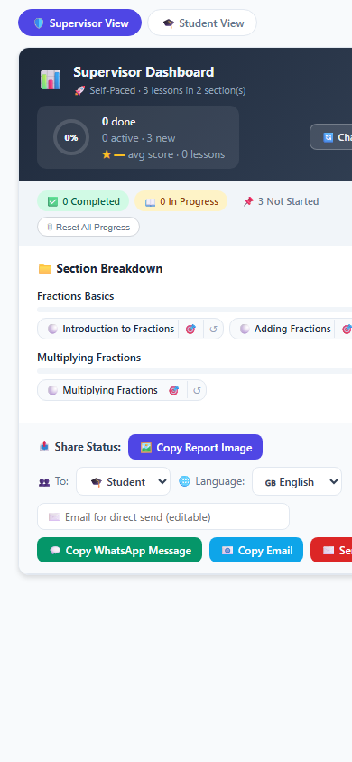
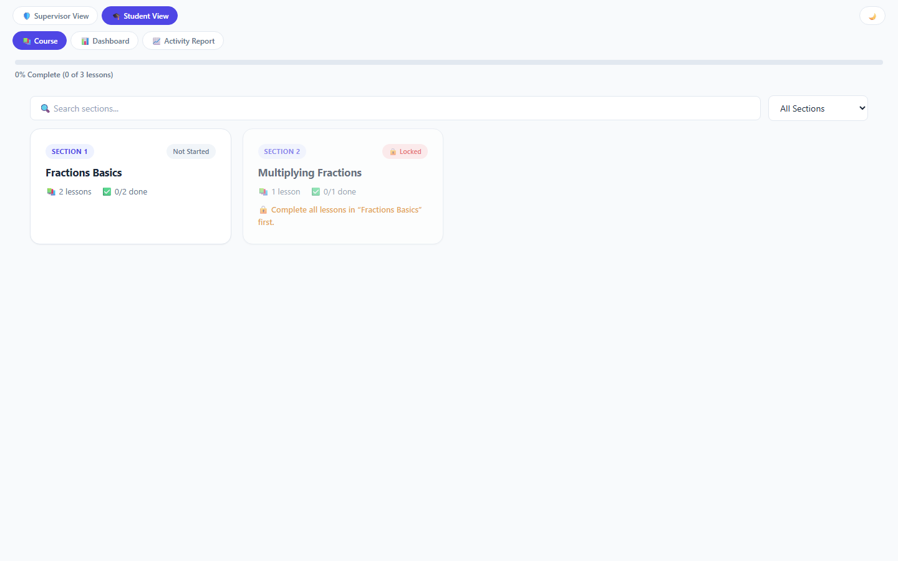
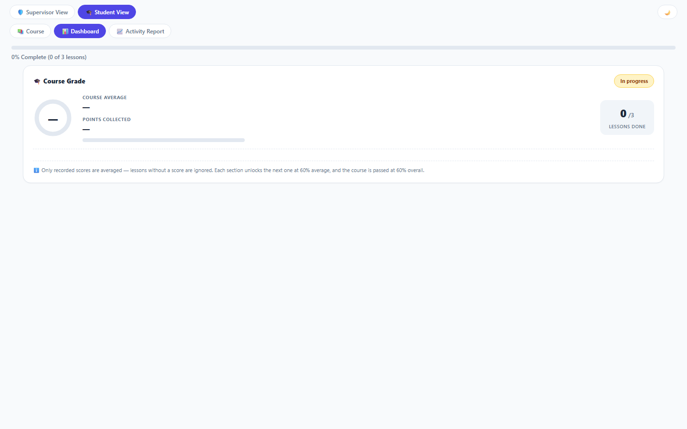
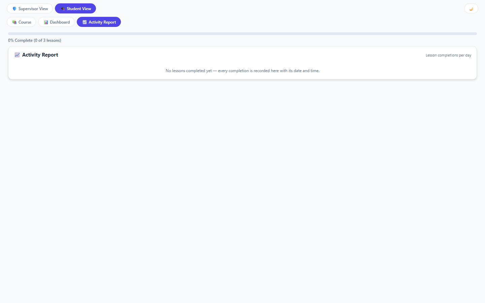

Self Paced Education By Section - Help
1. Overview
Self-Paced Education turns a curriculum into a personal study journey. The student works through sections and lessons one by one, and the supervisor follows the progress, reviews submissions and shares status reports with the family.
It is for education teams that run a curriculum (courses, tutoring, mentoring) and want each student to have their own pace, their own record, and clear communication with parents.
2. Before you start
- A CMS record with this tool placed on it (one record per student).
- The curriculum already built in the Curriculum Builder tool - select it in Setup.
- Field settings: Allow Save Request = yes (so quiz answers and progress save immediately); Allow Send Email = yes if the supervisor should send report emails from the tool.
3. Step by step
- Open the record in Setup mode (admin), choose the Curriculum Source, and set the student name, email, course start date and target end date - the target date is a recommended pace guide, not a strict deadline.
- The student opens the record, enters the first section, and studies lessons: content, then the quiz (or flashcards, presentation, PDF, video).
- When a lesson is done, the student taps Mark Complete or submits the quiz - the lesson moves to Pending Review and progress saves immediately.
- The supervisor opens the Supervisor view, approves pending lessons, and watches the pace against the target date.
- To share progress: open Share Status, pick the audience (student or parent) and the language (9 available), then copy the WhatsApp message, copy the image, or copy/send the email. The shared link opens the exact course page.
4. Common questions
| Question | Answer |
|---|---|
| Is the target end date a deadline? | No. It is a recommended pace guide - the app shows ahead / on schedule / behind to help, but study always stays open. |
| Which languages can the status report use? | English, French, Turkish, Spanish, Arabic, Pashto, Urdu, Hindi and Punjabi - for the student or the parent. |
| Where does the shared link point? | To the exact course page. The CMS provides it automatically; if the record sits on a special page, set Course Page Link in Setup and it wins. |
| What happens when a student submits a quiz? | Answers and progress are saved to the record immediately (with Allow Save Request enabled) and the lesson waits for supervisor review. |
| Can a supervisor edit the curriculum here? | No - the curriculum is authored in the Curriculum Builder tool; this tool only reads it. |
5. Troubleshooting
| Problem | What to do |
|---|---|
| Progress does not save after Submit Answers | Enable Allow Save Request = yes on the field settings; without it the tool can only stage data until the CMS Save. |
| Send Email button reports an error | Enable Allow Send Email = yes on the field settings and make sure the CMS email sender is configured. |
| The shared link opens the portal home instead of the course | Set the Course Page Link in Setup, or wait for the CMS page-URL feature (getParentPageUrl) - the tool picks it up automatically. |
| No curriculum appears | Open Setup and select the Curriculum Source; also confirm the Curriculum Builder object still exists. |
| Lesson locked although the previous one is done | The previous lesson may still be Pending Review - the supervisor must approve it first. |
6. What it looks like
Screenshots of Self Paced Education By Section with sample data - see exactly what you get.




